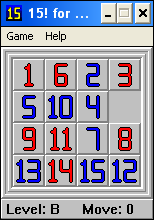
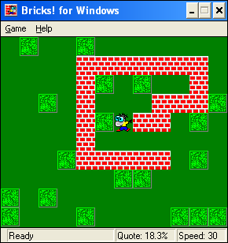
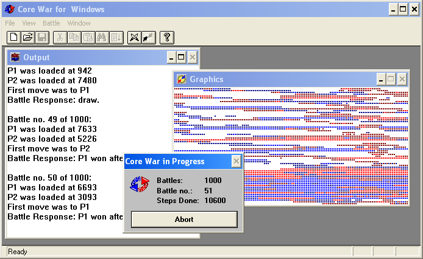
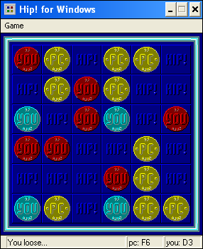
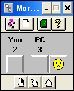
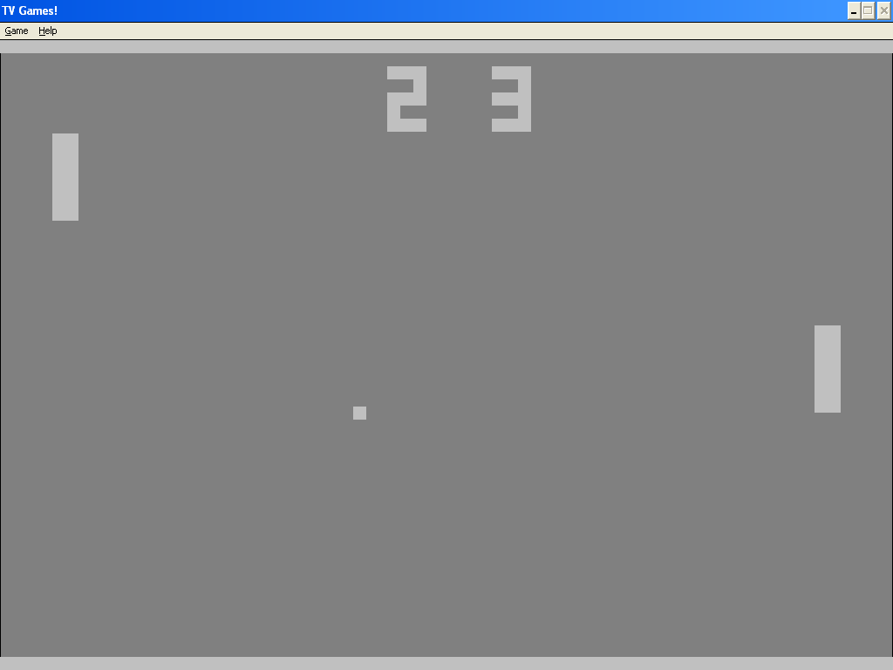
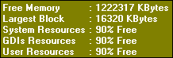

risorse | pc/win3.1x
Quella che segue è una raccolta di semplici giochi realizzati per esercizio durante lo studio della libreria MFC di Microsoft attorno al 1995. Tutti i programmi sono a 16 bit, realizzati con il Visual Studio 1.51. Per tale motivo, per poter funzionare correttamente, devono essere installati su un percorso privo di spazi. Inoltre, com'era consuetudine al tempo, questi programmi memorizzano le impostazioni in un file .ini salvato all'interno della cartella di installazione di Windows (%WINDIR%), comportamento che può causare qualche problema di accesso su sistemi operativi più moderni se non si dispone dei privilegi di amministrazione.
Classico gioco del 15: scopo del gioco è riordinare le tessere in modo tale che lo spazio libero si trovi nella posizione in basso a destra. Cliccare una delle tessere adiacenti allo spazio libero per effettuare lo spostamento.

Scarica il gioco (96KB), oppure i sorgenti (23KB).
Giochino anti-ecologico: aiuta il muratore a ricoprire il giardino di mattonelle. Usa i tasti cursore per spostare il muratore all'interno del giardino evitando di finire in un vicolo cieco; è vietato anche invertire la direzione.

Scarica il gioco (78KB), oppure i sorgenti (17KB).
Implementazione embrionale di un ambiente Core War ispirata allo standard ICWS'86.
Core War, così come descritto da A. K. Dewdney nella celebre rubrica "Computer Recreations" di "Scientific American", è un sistema all'interno del quale due programmi si danno battaglia: scopo di ognuno di essi è mandare in errore il contendente. I programmi sono scritti in Redcode, un linguaggio assembler piuttosto limitato, e sono eseguiti all'interno di una macchina virtuale denominata MARS.
Il programma consente di redigere programmi Redcode e di assemblarli; consente inoltre di caricare all'interno dell'emulatore MARS le versioni compilate di due programmi e di assistere, a scelta, ad una singola battaglia o ad un torneo completo. Lo svolgimento della battaglia è visualizzato graficamente su una mappa rettangolare che rappresenta la memoria del sistema MARS: le celle sotto il controllo del primo contendente sono evidenziate in rosso, quelle del secondo in blu (i colori più vivi rappresentano le istruzioni eseguite, quelli più spenti i dati acceduti). Al termine dello scontro, viene presentato un breve resoconto riassuntivo.

Scarica il gioco (162KB), oppure i sorgenti (50KB).
Nei sorgenti sono inclusi alcuni file Redcode "classici" nonché i relativi file oggetto che possono essere immediatamente utilizzati per simulare alcune battaglie.
Due giocatori a turno appoggiano una pedina sulla scacchiera. Perde colui che per primo forma un quadrato.

Scarica il gioco (66KB), oppure i sorgenti (16KB).
Classico gioco del sasso/carta/forbice. Nel caso sorgessero dei dubbi sull'onestà del programma, garantisco che le sue mosse sono del tutto… pseudo-casuali!

Scarica il gioco (85KB), oppure i sorgenti (14KB).
Emulatore del Pong.

Scarica il gioco (91KB), oppure i sorgenti (25KB).
Piccola utilità che visualizza costantemente il livello di occupazione delle risorse di sistema. Doppio click sulla finestra per accedere alla maschera delle opzioni.

Scarica l'utilità (49KB), oppure i sorgenti (11KB).
Pagina modificata l'8/11/2011